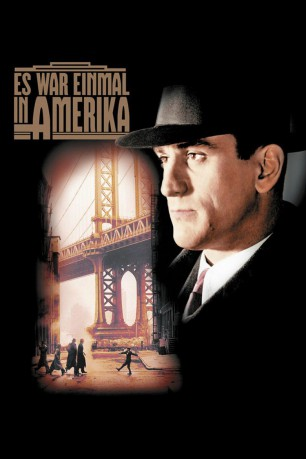

#3638 Es war einmal in Amerika
Auszeichnungen: 2 BAFTA-Awards gewonnen
 
 IMDB-Wertung: 8.4 / 10
IMDB-Wertung: 8.4 / 10  IMDB-TOP-Platzierung: 71
IMDB-TOP-Platzierung: 71  Metascore: 0
Metascore: 0 
New York zur Zeit der Prohibition. Max, Noodles und ihre Freunde verdienen sich bereits als Kinder mit Erpressungen und Schmuggeleien den einen oder anderen Dollar dazu. Jahre später, Noodles wird nach einer langen Haftstrafe für einen Mord aus dem Gefängnis entlassen, haben es die Freunde von damals unter Max zu einem skrupellosen Gangstersyndikat gebracht. Doch Ehrgeiz und Habgier zerstört die jahrzehntelange Freundschaft, und am Ende steht ein entsetzlicher Verrat...Dieses Mafiaepos ist das größte und letzte Werk des italienischen Regisseurs Sergio Leone. Es spielt im Amerika der 1920er bis 1960er Jahre und umfasst – in vielen Rückblenden verschachtelt - das Leben von fünf Gangstern, ihren Aufstieg und Fall in der Welt des organisierten Verbrechens. Weltweit existieren verschiedene Versionen des Filmes.
Jahr: 1984
Dauer: 251 Minuten
FSK: 16
Land: Italien Studio: Jugendfilm-VerleihTonspuren: DD5.1 - ,
Untertitel: Deutsch,
Auflösung: 1080p (1920x1080) Größe: 21299 MB
Genre: Drama, Krimi
Regisseur:  Sergio Leone
Sergio Leone
Drehbuch: Maurice Richlin
Soundtrack:
Darsteller:
 Robert De Niro als David 'Noodles' Aaronson
Robert De Niro als David 'Noodles' Aaronson James Woods als Maximilian 'Max' Bercovicz
James Woods als Maximilian 'Max' Bercovicz Elizabeth McGovern als Deborah Gelly
Elizabeth McGovern als Deborah Gelly Joe Pesci als Frankie Manoldi
Joe Pesci als Frankie Manoldi Burt Young als Joe
Burt Young als Joe Tuesday Weld als Carol
Tuesday Weld als Carol Treat Williams als James Conway O'Donnell
Treat Williams als James Conway O'Donnell Danny Aiello als Police Chief Vincent Aiello
Danny Aiello als Police Chief Vincent Aiello William Forsythe als Philip 'Cockeye' Stein
William Forsythe als Philip 'Cockeye' Stein- Darlanne Fluegel als Eve
 Robert Harper als Sharkey
Robert Harper als Sharkey Mario Brega als Mandy
Mario Brega als Mandy- Angelo Florio als Willie The Ape
 Brian Bloom als Young Patsy
Brian Bloom als Young Patsy James Russo als Bugsy
James Russo als Bugsy Paul Herman als Monkey
Paul Herman als Monkey- Tandy Cronyn als Reporter 1
- Arnon Milchan als Chauffeur
- Bruno Iannone als Thug
 Marcia Jean Kurtz als Max's Mother
Marcia Jean Kurtz als Max's Mother Estelle Harris als Peggy's Mother
Estelle Harris als Peggy's Mother Jennifer Connelly als Young Deborah
Jennifer Connelly als Young Deborah- Greg Anthony als Bar Room Patron , uncredited
 Bruno Bilotta als Extra at chinese theater , uncredited
Bruno Bilotta als Extra at chinese theater , uncredited Scott Coffey als Teenager , uncredited
Scott Coffey als Teenager , uncredited Richard Bright als Chicken Joe
Richard Bright als Chicken Joe- James Hayden als Patrick 'Patsy' Goldberg
- Larry Rapp als 'Fat' Moe Gelly
 Richard Foronjy als Officer 'Fartface' Whitey
Richard Foronjy als Officer 'Fartface' Whitey- Dutch Miller als Van Linden
- Gerard Murphy als Crowning
- Amy Ryder als Peggy
- Olga Karlatos als Woman in the Puppet Theatre
- Ray Dittrich als Trigger
- Frank Gio als Beefy
- Karen Shallo als Lucy Aiello
- Scott Schutzman Tiler als Young Noodles
- Rusty Jacobs als Young Max / David Bailey
- Adrian Curran als Young Cockeye
- Mike Monetti als Young Fat Moe
- Noah Moazezi als Dominic
- Frankie Caserta als Bugsy's Gang
- Joey Marzella als Bugsy's Gang
- Clem Caserta als Al Capuano
- Frank Sisto als Fred Capuano
- Jerry Strivelli als Johnny Capuano
- Julie Cohen als Young Peggy
- Marvin Scott als Interviewer
- Mike Gendel als Irving Gold
- Ann Neville als Girl in Coffin
Datei: X:\1984\Es war einmal in Amerika (1984, FSK16, 1920x1080).mkv seit 10.05.2016
Festplatte: HD 1980-1986
 Es gibt insgesamt 46 Filme in der Gruppe '1984'
Es gibt insgesamt 46 Filme in der Gruppe '1984'